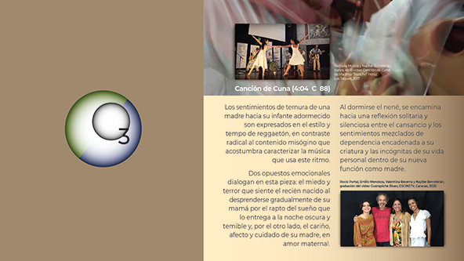

INFO: FUNCIÓN | INTEGRANTES | TARIFAS | DISTRIBUCIÓN | RIDER |
{kind=link}
I N I C I O

CANCIÓN DE CUNA
(Emilio Mendoza)
C 88 binaria
Los sentimientos de ternura de una madre hacia
su infante adormecido son expresados en el estilo y
tempo de reggaetón, en contraste radical al contenido
misógino que acostumbra caracterizar la música que usa
este ritmo.
Música
(guit 6, 12, voz, sax, bajo, bat, perc y maracas, con Amarillo Piña, pintor)
Grabación en vivo en el Teatro Emma Soler para el video de
Wladimir Rancho Pérez.
• En distrokid.com (Audio)
• En YouTube (Audio)
• CD Guarapiche Blues (2020), Cuarteto (guit 6, guit. 12, bajo, maracas)
• En distrokid.com (Audio)
• En YouTube (Audio)
• CD Laberinto Dúo (2017), Dúo (guit 6, guit 12)
• En distrokid.com (Audio)
• En YouTube (Audio)
Videos
|
Video de Rancho Wladimir
Pérez, Ozono con las bailarinas Nathalia
Molina y Nayibe Berroterán, Amarillo Piña,
artista plástico, Sala Emma Soler, Complejo
Cultural, Los Teques, 26-01-2017, grabado en
vivo.
|
|
Video
de SaliasTV en ambiente casero,
Quinta La Perla,
El Toronjil, San Antonio de los Altos, 22-11-2015. |
"Emilio Mendoza & Dhá Maharaj: A Fusion of Indian & Venezuelan Music"
en la ocasión de la celebración casera del cumpleaños de su hija Ávila, Caracas, 27-04-2013.
Si aprecia nuestra música y misión, puede ayudarnos a través de una donación.
BsS: Banco Mercantil, Cta Corriente: 01050024981024267520, Emilio Mendoza Guardia C.I. 3186000
US$: Zelle emiliomen@gmail.com • Paypal: emiliomen2007@hotmail.com
Ozono Jazz está representado por Producciones
© 2023 Copyright por Emilio Mendoza. Todos los Derechos Reservados